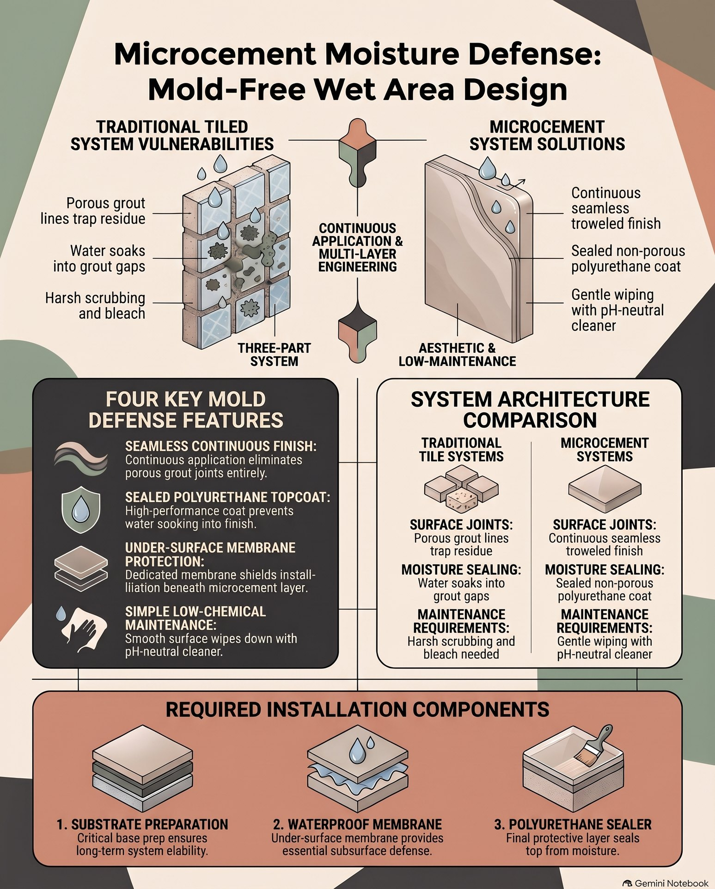
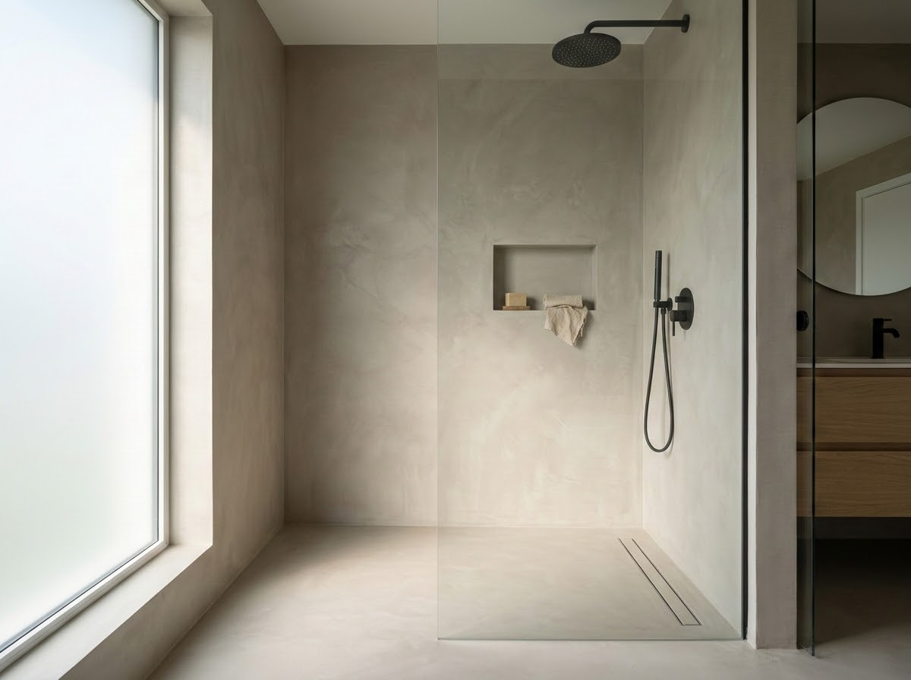

Microcement: Seamless Mineral Surfaces for Modern Spaces
Microcement is a thin, hand-troweled coating made from cement, fine mineral aggregates, polymers, and custom pigments. Applied in layers just 2–3 mm thick, it creates a continuous, seamless surface with no grout lines, joints, or seams.
The result looks like poured architectural concrete, but it is lighter, more refined, and can be applied directly over existing tile, concrete, or drywall without demolition.

Why Designers, Builders & Homeowners Choose It
Every finish is applied by hand, giving each surface its own subtle movement, depth, and organic character.
Seamless Continuity
One material can flow uninterrupted from floor to wall to vanity to curbless shower without a single break. Spaces feel larger, calmer, and more intentional.
Thin Profile, No Demolition
At 2–3 mm, microcement often goes directly over existing tile, concrete, or drywall. That means less demo, less landfill waste, minimal dust, and faster timelines for occupied homes and retail storefronts.
Custom Color & Texture
Finishes range from soft matte stone to smooth satin, in warm whites, greiges, earth tones, charcoals, or bespoke pigments matched to your architectural or brand palette.
Moisture & Mold Defense
Mold needs three things: moisture, organic material, and somewhere to hide. Traditional tile gives it all three in the porous grout lines. A professionally installed Organic Finishes microcement system removes those hiding places:
-
No Grout Lines: A seamless, monolithic surface leaves no porous joints where standing water, soap residue, and mold spores collect.
-
Waterproofing Beneath: In showers and wet areas, a dedicated liquid or sheet waterproofing membrane goes under the microcement, protecting the system both above and below.
-
Fiberglass Mesh Reinforcement: A high-strength base coat embeds structural fiberglass mesh to bridge substrate micro-fractures and distribute stress.
-
Sealed, Non-Porous Topcoat: A high-performance 2-component polyurethane sealer keeps water from soaking into the surface and wipes down fast with pH-neutral cleaner—no scrubbing grout and no bleach.

Where Microcement Can Be Applied
- Floors: Seamless residential living areas & high-traffic commercial storefronts
- Showers & Wet Rooms: Curbless shower floors, walls, integrated benches, and recessed niches
- Bathroom Vanities & Countertops: Floating vanities and integrated basins
- Kitchen Surfaces: Countertops, islands, backsplashes, and custom range hoods
- Architectural Features: Stairs, treads, risers, and monolithic fireplace surrounds
- Furniture & Retail Fixtures: Custom tables, built-ins, display plinths, and cash wraps
Compatible Base Surfaces (No Demo)
- Existing Ceramic or Porcelain Tile: Bonds over structurally sound tile after diamond grinding, joint flush-filling, and polymer priming
- Concrete & Cement Board: Slabs, cement backer boards, and masonry walls
- Drywall: Interior gypsum board reinforced with embedded fiberglass mesh
- Plywood & MDF: Properly primed structural wood for custom furniture, vanities, and retail displays
- Self-Leveler & Gypsum Screeds: Prepared subfloors ready for seamless surfacing
The Topcoat Makes the System
The sealer is what turns a beautiful hand-troweled surface into a performing one. We match the topcoat formulation directly to how your space will be used:
| Application Area | Topcoat System Type | Required Finish / Texture | Functional Benefit |
|---|---|---|---|
| Residential Showers (Walls & Benches) | 2-component water-based polyurethane, mandatory multiple coats | Matte or Satin | Forms a continuous, pinhole-free barrier against daily water penetration and steam |
| Shower Floors & Wet Bases | Polyurethane infused with anti-slip additive | Matte, Slip-Resistant | Combines non-porous moisture protection with added surface traction for wet-area safety |
| Retail Storefront & Commercial Floors | Commercial-grade polyurethane, high-traffic rated | Matte or Satin | Endures continuous, high-volume daily foot traffic and abrasive scuffing in commercial spaces |
| Countertops & Vanities | Specialized stain-resistant polyurethane | Satin | Provides fluid resistance against household food acids, oils, cosmetics, and standing liquids |
| Walls & Feature Walls | Standard polyurethane sealer | Ultra-Matte to Satin | Delivers non-reflective aesthetic clarity while protecting vertical surfaces against everyday wear |
Architect & Specifier Master Specification (.DOCX)
Complete 3-part CSI specification for Lime- and Cement-Based Microcement Plaster Systems, including GA-214 Level 4/5 gypsum substrate preparation, quartz bond primers, 5"×5" physical sample submittal protocols, and referenced performance standards (ASTM E84 Surface Burning · ASTM D1308 Chemical Resistance · ASTM D2486 Scrub Resistance · ASTM D3363 Film Hardness).
Built for Luxury Homes & High-Traffic Retail

Retail Storefront — Wellness & Apparel
For a premium wellness or apparel brand, microcement gives the clean, gallery-quality backdrop that lets product be the focus. Seamless floors move from entry to fitting room without visual interruption.
Display plinths and cash wraps can be finished in the exact same material, and a commercial-grade polyurethane topcoat stands up to rigorous daily foot traffic. Pigments are custom-matched to brand standards.
Spa Shower Remodel — Midtown Tulsa
Midtown Tulsa's historic homes often come with dated tile showers and tight footprints. Microcement opens up the space without invasive tear-out demolition: a curbless, seamless shower where floor, walls, bench, and niche are read as one continuous sculpted form.
It is waterproofed underneath, sealed on top with multi-coat 2-component polyurethane, and finished with a slip-resistant floor coat. The result is a spa-level bathroom that respects the home's architectural character and feels completely current.

Simple Care & Long-Term Maintenance
pH-Neutral Routine Cleaning
Clean with a gentle pH-neutral soap and a soft microfiber cloth or mop. Strictly avoid bleach, ammonia, and abrasive powders, which chemically degrade the protective polyurethane topcoat.
Wet-Area Squeegee Care
Use a simple squeegee on shower walls and glass after use to prevent hard-water mineral ring buildup from standing water.
Renewable Commercial Topcoat
In high-traffic retail or commercial settings, the protective polyurethane topcoat can be refreshed every few years without disturbing the underlying microcement layers.